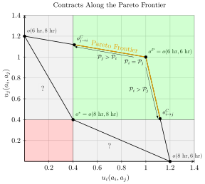
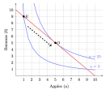
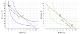
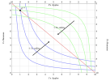
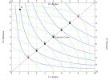
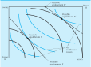

source("../dsan-globals/_globals.r")Week 11: Fear and Loathing on the Pareto Frontier
DSAN 5450: Data Ethics and Policy
Spring 2026, Georgetown University
Class Sessions
Where We Left Off…
\[ \DeclareMathOperator*{\argmax}{argmax} \DeclareMathOperator*{\argmin}{argmin} \newcommand{\bigexp}[1]{\exp\mkern-4mu\left[ #1 \right]} \newcommand{\bigexpect}[1]{\mathbb{E}\mkern-4mu \left[ #1 \right]} \newcommand{\definedas}{\overset{\small\text{def}}{=}} \newcommand{\definedalign}{\overset{\phantom{\text{defn}}}{=}} \newcommand{\eqeventual}{\overset{\text{eventually}}{=}} \newcommand{\Err}{\text{Err}} \newcommand{\expect}[1]{\mathbb{E}[#1]} \newcommand{\expectsq}[1]{\mathbb{E}^2[#1]} \newcommand{\fw}[1]{\texttt{#1}} \newcommand{\given}{\mid} \newcommand{\green}[1]{\color{green}{#1}} \newcommand{\heads}{\outcome{heads}} \newcommand{\iid}{\overset{\text{\small{iid}}}{\sim}} \newcommand{\lik}{\mathcal{L}} \newcommand{\loglik}{\ell} \DeclareMathOperator*{\maximize}{maximize} \DeclareMathOperator*{\minimize}{minimize} \newcommand{\mle}{\textsf{ML}} \newcommand{\nimplies}{\;\not\!\!\!\!\implies} \newcommand{\orange}[1]{\color{orange}{#1}} \newcommand{\outcome}[1]{\textsf{#1}} \newcommand{\param}[1]{{\color{purple} #1}} \newcommand{\pgsamplespace}{\{\green{1},\green{2},\green{3},\purp{4},\purp{5},\purp{6}\}} \newcommand{\pedge}[2]{\require{enclose}\enclose{circle}{~{#1}~} \rightarrow \; \enclose{circle}{\kern.01em {#2}~\kern.01em}} \newcommand{\pnode}[1]{\require{enclose}\enclose{circle}{\kern.1em {#1} \kern.1em}} \newcommand{\ponode}[1]{\require{enclose}\enclose{box}[background=lightgray]{{#1}}} \newcommand{\pnodesp}[1]{\require{enclose}\enclose{circle}{~{#1}~}} \newcommand{\purp}[1]{\color{purple}{#1}} \newcommand{\sign}{\text{Sign}} \newcommand{\spacecap}{\; \cap \;} \newcommand{\spacewedge}{\; \wedge \;} \newcommand{\tails}{\outcome{tails}} \newcommand{\Var}[1]{\text{Var}[#1]} \newcommand{\bigVar}[1]{\text{Var}\mkern-4mu \left[ #1 \right]} \]
Operationalizing Power
- Equally good outside options \(\implies\) can contract to Pareto-optimal point \(o^P\)
- \(i\) has better outside options \(\implies\) can make take it or leave it offer to \(j\):
- “You (\(j\)) fish 6 hrs all the time. I (\(i\)) fish 6 hrs 41% of time, 8 hrs otherwise”
- Ever so slightly better for \(j\) \(\implies\) \(j\) accepts (Behavioral econ: \(j\) accepts if 41% meets subjective fairness threshold; observed across many many cultures!)
- Later / next week: observe policy with outcome \(o^{C}_{i \rightarrow j} \iff\) policy values \(i\)’s welfare more than \(j\)’s welfare (inferred social welfare weights \(\omega_i > \omega_j\))

Since We’ve Already Opened the Pandora’s Box of Utility…

- Bluey obtains greater utility within the same budget by moving from \(E^1\) to \(O^1\)
Two Can Play This Game…

- Bluey obtains greater utility within the same budget by moving from \(E^1\) to \(O^1\)
- Greenie obtains greater utility within the same budget by moving from \(E^2\) to \(O^2\)
The Edgeworth Box

The Contract(!) Curve

- From initial endowment \(E\), if allowed to trade, “rational” players can reach any allocation along dashed contract curve from \(G\) to \(B\)… (Why not \(A\) or \(H\)?)
- So, what determines which of these points they end up at? (Middle name hint)
First Fundamental Theorem of Welfare Economics
Theorem: [Antecedents (Coase Conditions)] \(\Rightarrow\) markets produce Pareto-optimal outcomes
- Even commie Jeff finds proof+corollaries compelling / convincing / empirically-supported
- (It’s a full-on proof, in the mathematical sense, so doesn’t rly matter what I think; I just mean, imo, important and helpful to think through for class on policy!)
- Ex: Conditional on antecedents [(Coase) minus (perfect competition) plus (thing must be allocated via markets)], \(\uparrow\) Competition \(\leadsto\) More efficient allocations
Payoff from Jeff Pointing at Things Saying “Antecedents!” 500x
Consequent only true if antecedents hold! Otherwise, proper answer becomes “It depends! Let’s see if data can help us find out!” (Will minimum wage hurt/help blah blah blah… “It depends! Tell me the details!”) (Will new condos blah blah blah yimby nimby…) (Will re-allocating welfare budget from \(X\) to \(Y\) blah blah blah… 👀 HW4)
[Economic inequality] is a social law, something in the nature of man. (pareto1896cours?)
We’ve got a [thing] made by men, isn’t that something we should be able to change? (Steinbeck 1939)
Coase Antecedents \(\approx\) equalized power!
- Ex 1: Perfect Competition \(\Rightarrow\) (\(\neg\) monopoly) \(\wedge\) (\(\neg\) monopsony) \(\Rightarrow\) everyone’s outside option equally good \(\Rightarrow\) no take-it-or-leave-it coercion possible (try to coerce, I’ll say no and go to one of the other \(\infty\) people offering equally good options)
- Ex 2: No Informational Asymmetries \(\Rightarrow\) Can’t “trick me” into buying defective product (Akerlof (1970), “Market for Lemons”)
So… What Happens When Antecedents Don’t Hold?
- \(\neg\)(Coase Antecedents) \(\Rightarrow\) Unequal Power… Puts us in the realm of Descriptive Ethics! (Thucydides!)
- Like how Gauss-Markov Assumptions \(\Rightarrow\) OLS is BLUE, yet our whole field (at least, a whole class, DSAN5300) built on what to do when G-M Assumptions don’t hold
- For policy development, helpful to think through
- which cases “break” FFT (more honored in the breach)
- How each violation might be “fixed” through policy1
- Our violation: No externalities assumption
- Possible policy “fixes”: property rights, market-socialist nationalization
Part 2 Suddenly Collides with Part 1: Property Rights
- Rawlsian Rights: Vetos on societal decisions; Constitution can make some inalienable (can’t sell self into slavery), some alienable
- Property rights: alienable. You can gift or sell the rights if you want (veto is over society just, like, taking your property if someone else would be happier with it)
Case : Society decides Right to Clean Air \(\prec\) Right to Smoke \(\Rightarrow\) Start at \(E\)
- \(A\) can pay \(B\) to alienate right (Pay $50/month, can smoke 5 ciggies) \(\leadsto\) \(X\)
- Movement along light blue curve: giving up \(x\) money for \(y\) smoke, equally happy. \(u_A(p)\) identical for \(p\) on curve
- Movement to higher light blue curve () \(\Rightarrow\) greater utility \(u_A' > u_A\)
Case Society decides Smoke \(\prec\) Clean Air \(\Rightarrow\) Repeat for \(E' \leadsto X'\)

Why Exactly Does [Commodifying Rights] Sometimes Enable [“Cancelling Out” Externalities]?
- The key: Forces agent \(i\) to pay a cost for inflicting disutility on agent \(j\)!
- (Here plz note: “\(X\) sometimes enables \(Y\)” does not mean \(X\) is a necessary or sufficient condition for \(Y\)! Think of walking into a dark room, trying different light switches until one turns on the overhead light)
- Dear reader, I know what you’re thinking… But Jeff!! This is all so abstract and theoretical!! We’re sick of your ivory-tower musings, get your head out of the clouds and make it relevant to our day-to-day lives, by relating it back to Yugoslavia’s 1965 economic reforms!!
- Don’t worry, I’ve listened to your concerns, and the next slide is here for you 😌
Externalities: I Get Reward, Others Pay Cost 🥳
- Firm \(S\) produces amount of steel \(s\), pollution \(x\)
- Firm \(F\) “produces” amount of fish \(f\)
- \(S\) optimizes
\[ s^*_{\text{Priv}}, x^*_{\text{Priv}} = \argmax_{s,x}\left[ p_s s - c_s(s, x) \right] \]
- While \(F\) optimizes
\[ f^*_{\text{Priv}} = \argmax_{f}\left[ p_f f - c_f(f, x) \right] \]
- If [Yugoslavia-style] nationalized, new optimization of joint steel-fish venture is
\[ s^*_{\text{Yugo}}, f^*_{\text{Yugo}}, x^*_{\text{Yugo}} = \argmax_{s, f, x}\left[ p_s s + p_f f - c_s(s, x) - c_f(f, x) \right] \]
- Can prove/“prove” that \(o(s^*_{\text{Yugo}}, f^*_{\text{Yugo}}, x^*_{\text{Yugo}})\) Pareto-dominates \(o(s^*_{\text{Priv}}, x^*_{\text{Priv}}, f^*_{\text{Priv}})\)
- So… what determines which agents get to ignore externalities? (Dead horse)
Utility \(\rightarrow\) Social Welfare
Externalities
- Jeef and Keef are roommates: Jeef loves listening to Tony Danza Tapdance Extravaganza, but Keef is normal and slowly dies inside with each additional song
library(tidyverse)── Attaching core tidyverse packages ──────────────────────── tidyverse 2.0.0 ──
✔ dplyr 1.1.4 ✔ readr 2.1.5
✔ forcats 1.0.0 ✔ stringr 1.5.1
✔ lubridate 1.9.4 ✔ tibble 3.3.0
✔ purrr 1.0.4 ✔ tidyr 1.3.1
── Conflicts ────────────────────────────────────────── tidyverse_conflicts() ──
✖ dplyr::filter() masks stats::filter()
✖ dplyr::lag() masks stats::lag()
ℹ Use the conflicted package (<http://conflicted.r-lib.org/>) to force all conflicts to become errorsmusic_df <- tribble(
~Songs, ~Jeef, ~Keef,
0, 0, 0,
1, 13, -2,
2, 18, -6,
3, 24, -13,
4, 28, -20,
5, 30, -42
)
music_df <- music_df |>
mutate(Total = Jeef + Keef)
music_df| Songs | Jeef | Keef | Total |
|---|---|---|---|
| 0 | 0 | 0 | 0 |
| 1 | 13 | -2 | 11 |
| 2 | 18 | -6 | 12 |
| 3 | 24 | -13 | 11 |
| 4 | 28 | -20 | 8 |
| 5 | 30 | -42 | -12 |
long_df <- music_df |>
pivot_longer(!Songs, names_to="Roommate", values_to="Utility")
util_df <- long_df |>
filter(Roommate != "Total")
ggplot(util_df, aes(x=Songs, y=Utility, color=Roommate)) +
geom_line(linewidth=g_linewidth) +
geom_point(size=g_pointsize) +
labs(
title="Individual Utility: Jeef vs. Keef",
x="Number of Songs Played",
y="Utility"
) +
theme_dsan("quarter")
welfare_df <- long_df |>
filter(Roommate == "Total")
ggplot(welfare_df, aes(x=Songs, y=Utility, color=Roommate)) +
geom_line(linewidth=g_linewidth) +
geom_point(size=g_pointsize) +
labs(
title="Social Welfare: Jeef and Keef",
x="Number of Songs Played",
y="Social Welfare"
) +
scale_color_manual(values=c(cbPalette[3]), labels=c("Total ")) +
theme_dsan("quarter") +
remove_legend_title()
So What’s the Issue?
- These utility values are not observed
- If we try to elicit them, both Jeef and Keef have strategic incentives to lie (over-exaggerate)
- Jeef maximizes own utility by reporting \(u_j(s) = \infty\)
- Keef maximizes own utility by reporting \(u_k(s) = -\infty\)
- (…Second price auctions tho)
Now with Scarce Resources
- In a given week, Jeef and Keef have 14 meals and 7 aux hours to divide amongst them
\[ \begin{align*} \max_{m_1,m_2,a_1,a_2}& W(u_1(m_1,a_1),u_2(m_2,a_2)) \\ \text{s.t. }& m_1 + m_2 \leq 14 \\ \phantom{\text{s.t. }} & ~ \, a_1 + a_2 \; \leq 7 \end{align*} \]
- Let’s assume \(u_i(m_i, a_i) = m_i + a_i\) for both
- \(\Rightarrow\) One solution: \(m_1 = 14, m_2 = 0, a_1 = 7, a_2 = 0\)…
- \(\Rightarrow\) Another: \(m_1 = 0, m_2 = 14, a_1 = 0, a_2 = 7\)…
- Who decides? Any decision implies \(\omega_1, \omega_2\) (\(\omega_1 + \omega_2 = 1\))
Let’s Talk Projects!
References
Akerlof, George A. 1970. “The Market for "Lemons": Quality Uncertainty and the Market Mechanism.” The Quarterly Journal of Economics 84 (3): 488–500. https://doi.org/10.2307/1879431.
Becker, Gary S. 1957. The Economics of Discrimination. University of Chicago Press. https://books.google.com?id=50qHcSNVVEMC.
Kasy, Maximilian, and Rediet Abebe. 2021. “Fairness, Equality, and Power in Algorithmic Decision-Making.” In Proceedings of the 2021 ACM Conference on Fairness, Accountability, and Transparency, 576–86. FAccT ’21. New York, NY, USA: Association for Computing Machinery. https://doi.org/10.1145/3442188.3445919.
Sen, Amartya. 1992. Inequality Reexamined. Clarendon Press.
Footnotes
Recall W01: Earned Income Tax Credits, Emissions Markets, Climate Engineering, Antitrust Legistlation \(\in \text{Policy Set}\); Black Panther Community Police Patrols, Blowing Up Oil Pipelines (malm2021how?), Bolshevik Revolution also \(\in \text{Policy Set}\)↩︎
Social Welfare Functionals
Functionals?
We Live In A Society, Part 2
\[ W(\mathbf{u}) = W(u_1, \ldots, u_n) \Rightarrow W(\mathbf{u})(x) = W(u_1(x), \ldots, u_n(x)) \]
Alternative SWF Specifications
\[ W(\underbrace{v_1, \ldots, v_n}_{\text{Values}})(x) \overset{\text{e.g.}}{=} \omega_1\underbrace{v_1(x)}_{\text{Privacy}} + \omega_2\underbrace{v_2(x)}_{\mathclap{\text{Public Health}}} \]
\[ W(\underbrace{s_1, \ldots, s_n}_{\text{Stakeholders}})(x) = \omega_1\underbrace{u_{s_1}(x)}_{\text{Teachers}} + \omega_2\underbrace{u_{s_2}(x)}_{\text{Parents}} + \omega_3\underbrace{u_{s_3}(x)}_{\text{Students}} + \omega_4\underbrace{u_{s_4}(x)}_{\mathclap{\text{Community}}} \]
The Conveniently-Left-Out Detail
\[ \mathbb{E}[Y \mid D = 1, A = 1] = \mathbb{E}[Y \mid D = 1, A = 0] \]
Remaining (Challenging) Details
Back to Utilitarian SWF
\[ W(u_1, \ldots, u_n)(x) = \frac{1}{n}u_1(x) + \cdots + \frac{1}{n}u_n(x) \]
The Hard Problem of Utilitarian SWF